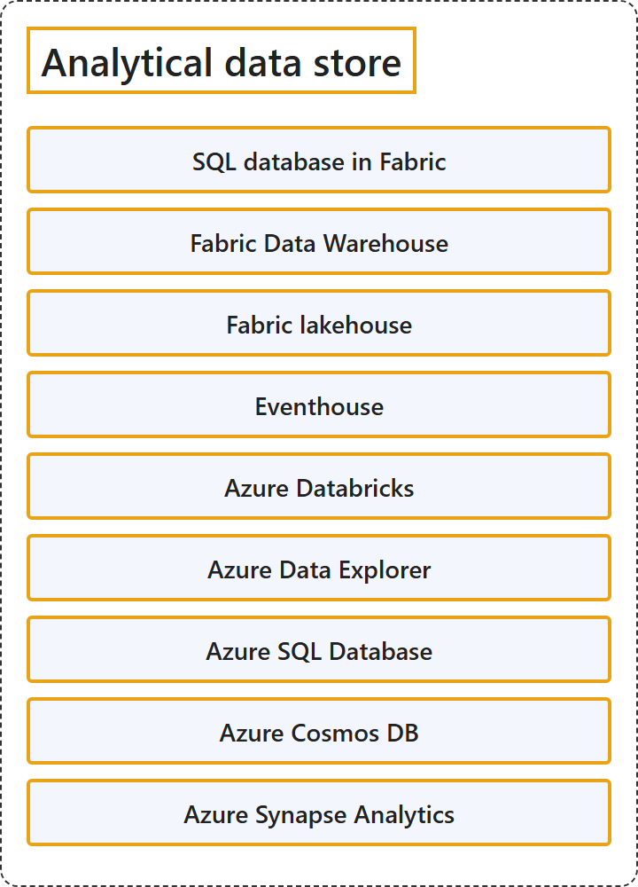

11.5 Analytical Data Store
Classification

Glossary
| Term | Definition | 中文翻译 | Source |
|---|---|---|---|
| SQL database in Fabric Fabric 中的 SQL 数据库 |
"SQL database in Microsoft Fabric is a developer-friendly transactional database, based on Azure SQL Database, that allows you to easily create your operational database in Fabric." | Microsoft Fabric 中的 SQL 数据库是一种对开发人员友好的事务数据库，基于 Azure SQL 数据库，让你可以在 Fabric 中轻松创建操作数据库。 | Microsoft, 2026c, para. 1 |
| Fabric Data Warehouse Fabric 数据仓库 |
"Fabric Data Warehouse is an enterprise scale relational warehouse on a data lake foundation." | Fabric 数据仓库是一种企业规模的关系仓库，建立在数据湖基础之上。 | Microsoft, 2026h, para. 1 |
| Fabric lakehouse Fabric 湖仓 |
"A lakehouse in Fabric combines the scalability of a data lake with the querying capabilities of a warehouse." | Fabric 中的湖仓结合了数据湖的可伸缩性和数据仓库的查询能力。 | Microsoft, 2026d, para. 1 |
| Eventhouse Eventhouse |
"Eventhouses are databases designed for storing and analyzing streaming data, so you can query billions of events in seconds." | Eventhouse 是专为存储和分析流数据而设计的数据库，让你可以在几秒内查询数十亿个事件。 | Microsoft, 2026b, para. 1 |
| Azure Databricks Azure Databricks |
"Azure Databricks is a unified, open analytics platform for building, deploying, sharing, and maintaining enterprise-grade data, analytics, and AI solutions at scale." | Azure Databricks 是一个统一、开放的分析平台，用于大规模构建、部署、共享和维护企业级数据、分析和 AI 解决方案。 | Microsoft, 2026f, para. 1 |
| Azure Data Explorer Azure 数据资源管理器 |
"Azure Data Explorer is a fully managed, high-performance, big data analytics platform that makes it easy to analyze high volumes of data in near real time." | Azure 数据资源管理器是一个完全托管、高性能的大数据分析平台，可以轻松地近实时分析大量数据。 | Microsoft, 2026e, para. 1 |
| Azure SQL Database Azure SQL 数据库 |
(context) "This article provides an overview of Azure SQL Database, a fully managed platform as a service (PaaS) database engine that handles most of the database management functions such as upgrading, patching, backups, and monitoring without user involvement." | （语境）本文概述 Azure SQL 数据库，它是一个完全托管的平台即服务 (PaaS) 数据库引擎，无需用户参与就能处理大部分数据库管理功能，例如升级、修补、备份和监视。 | Microsoft, 2026g, para. 1 |
| Azure Cosmos DB Azure Cosmos DB |
"Azure Cosmos DB is a fully managed NoSQL and vector database. It offers single-digit millisecond response times, automatic and instant scalability, along with guaranteed speed at any scale." | Azure Cosmos DB 是一种完全托管的 NoSQL 和矢量数据库。它提供个位数毫秒级的响应时间、自动即时的可伸缩性，以及任何规模下有保证的速度。 | Microsoft, 2026a, "...for free" section, para. 1 |
| Azure Synapse Analytics Azure Synapse Analytics |
"Azure Synapse is an enterprise analytics service that accelerates time to insight across data warehouses and big data systems." | Azure Synapse 是一种企业分析服务，它加快跨数据仓库和大数据系统获取见解的速度。 | Microsoft, 2024, para. 1 |
References
- Microsoft. (2024, July 12). What is Azure Synapse Analytics? Microsoft Learn. https://learn.microsoft.com/en-us/azure/synapse-analytics/overview-what-is
- Microsoft. (2026a, June 8). Azure Cosmos DB - Database for the AI era. Microsoft Learn. https://learn.microsoft.com/en-us/azure/cosmos-db/overview
- Microsoft. (2026b, June 16). Eventhouse overview. Microsoft Learn. https://learn.microsoft.com/en-us/fabric/real-time-intelligence/eventhouse
- Microsoft. (2026c, October 2). SQL database in Microsoft Fabric. Microsoft Learn. https://learn.microsoft.com/en-us/fabric/database/sql/overview
- Microsoft. (2026d, September 2). What is a lakehouse in Microsoft Fabric? Microsoft Learn. https://learn.microsoft.com/en-us/fabric/data-engineering/lakehouse-overview
- Microsoft. (2026e, July 23). What is Azure Data Explorer? Microsoft Learn. https://learn.microsoft.com/en-us/azure/data-explorer/data-explorer-overview
- Microsoft. (2026f, September 11). What is Azure Databricks? Microsoft Learn. https://learn.microsoft.com/en-us/azure/databricks/introduction/
- Microsoft. (2026g, October 13). What is Azure SQL Database? Microsoft Learn. https://learn.microsoft.com/en-us/azure/azure-sql/database/sql-database-paas-overview?view=azuresql
- Microsoft. (2026h, September 2). What is Fabric Data Warehouse? Microsoft Learn. https://learn.microsoft.com/en-us/fabric/data-warehouse/data-warehousing